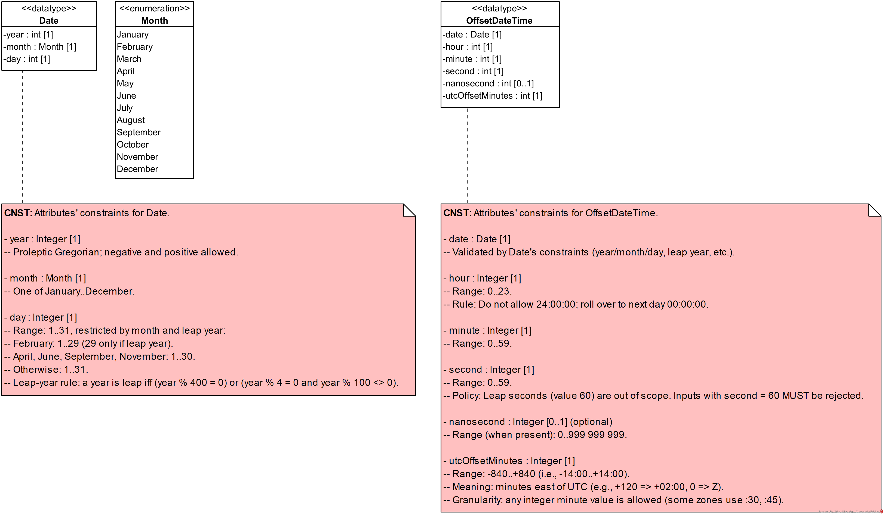

Health-RI Ontology
Version 0.11.3
Sex and Gender
This document describes the OntoUML conceptual model of Sex and Gender, detailing its structure, types, and relationships. The model follows the ontological notion of <
This distinction is crucial to properly model the social, legal, and biological complexity of sex and gender in human contexts.
Person's Sex and Gender

This integrated diagram brings together all the sex and gender modes that characterize a Person:
- Intrinsic modes: Karyotypical Sex, Gender Identity.
- Extrinsic modes: Phenotypic Sex, Sex at Birth, Administrative Gender, Legal Gender.
It also makes explicit the mediation roles for extrinsic modes highlighting how external agents participate in assigning or recognizing these properties.
This unified view underlines the model s goal: to provide a clear, precise, and inclusive conceptual framework that acknowledges both personal identity and social practices in defining sex and gender.
Sex
Sex at Birth

The diagram models Sex at Birth as an extrinsic mode that is determined through a process of formal assignment at the time of birth registration. While such assignments often rely on the newborn s phenotypical features, they are not merely descriptive but the outcome of a social and administrative act recorded in official documents.
The process is represented by the relator Sex at Birth Assignment, which mediates between the Sex at Birth Assigner (a role typically played by a healthcare professional) and the Person with Assigned Sex at Birth. This mediation links the professional responsible for the classification to the person whose sex is being recorded. Persons may therefore appear either as Persons with Assigned Sex at Birth further specified as male, female, or indeterminate or as Persons with Unassigned Sex at Birth if no assignment has yet taken place.
The assignment is also tied to a Birth Notification, which documents the registration act. A constraint clarifies that a person cannot register their own birth notification, ensuring that the assignment is always performed by another agent. Furthermore, the model acknowledges the influence of Birth-related Legislation Rules, which establish the normative framework within which sex at birth assignments occur.
Karyotypical Sex

The diagram represents Karyotypical Sex as a mode that characterizes every Person according to their chromosomal configuration. This intrinsic determination is grounded in the composition of sex chromosomes and is present from birth, independently of later developmental or interpretive factors.
The model distinguishes between Karyotypical Male and Karyotypical Female, each further divided into Regular and Variant forms. Regular karyotypical males and females correspond to the common chromosomal patterns XY and XX, while variant karyotypes (e.g., XXY, X0, mosaic configurations) capture biological diversity beyond the typical patterns. Both male and female partitions are complete and disjoint, ensuring exhaustive and non-overlapping classification.
At the level of persons, the ontology separates Person with Regular Sex Chromosome from Person with Variant Sex Chromosome. Each of these types is further specified by the corresponding karyotypical category. Variant cases also include the possibility of a Karyotypical Indeterminate Person, acknowledging that some chromosomal configurations cannot be unambiguously aligned with either the male or female partition.
Phenotypic Sex

The diagram models Phenotypic Sex as a mode that characterizes a Person based on their observable anatomical and morphological traits. Unlike karyotypical sex, phenotypic sex is extrinsic, as it arises through assessment by others rather than being solely determined by genetic makeup. This assessment is represented through the relator Phenotypic Sex Assessment, which mediates the interaction between the Person with Assessed Phenotypic Sex and the Phenotypic Sex Assessor, a role typically played by a healthcare professional.
Persons with assessed phenotypic sex are further specialized into the roles Male Phenotypic Person, Female Phenotypic Person, and Ambiguous Phenotypic Person. These roles are complete and overlapping, reflecting the variability of observable traits and the fact that assessments may not always yield a binary outcome.
The ontology makes explicit use of Visual Sex Characteristics as the basis for assessment. These are categorized as Male-typical, Female-typical, or Indeterminate Visual Sex Characteristics, providing the cues through which assessments are made. This partition is complete and disjoint, ensuring that each characteristic is classified in exactly one category.
Sex

The diagram models Sex as a biological property that characterizes every Person. In this context, sex is represented as a mode, understood as an intrinsic property grounded in the person s biological makeup. The ontology acknowledges, however, that biological sex is not a single or unitary concept but rather an umbrella encompassing multiple dimensions, such as chromosomal, gonadal, hormonal, anatomical, and phenotypical aspects.
The model structures biological sex through three subkinds of persons: Male Biological Person, Female Biological Person, and Indeterminate Biological Person. These roles are distinguished based on the relative number of Sexual Dimorphic Characteristics exhibited by the individual. Such characteristics are further classified as Male-typical, Female-typical, or Indeterminate Dimorphic Characteristics, and together they form the basis for sex classification in the model.
This classification is simplified, focusing on the count of dimorphic traits without weighting them, while recognizing that in biological and clinical practice, some traits such as chromosomal constitution, gonadal tissue, or hormonal profiles may be considered diagnostically more significant than secondary sexual features. Supplementary notes in the model highlight this limitation and indicate that future refinements may include explicit modeling of chromosomes as sexual dimorphic characteristics.
By organizing sex in this way, the ontology establishes biological sex as a multifaceted construct while situating it within a coherent framework that connects intrinsic features of persons with representative biological dimensions, such as karyotypical, phenotypic, and assigned sex at birth.
Views
Person's Sex Taxonomy

The diagram presents an updated consolidated view of the taxonomy of sex classifications modeled within the Sex subpackage. It does not introduce new constructs but integrates, in a single structure, the different categories and roles established in the package s detailed diagrams.
At the center, Person is specialized into distinct sex-related determinations. These include Karyotypical Male and Karyotypical Female, representing intrinsic chromosomal categories; Male Biological Person, Female Biological Person, and Indeterminate Biological Person, which reflect biological classifications based on dimorphic traits; Person with Assessed Phenotypic Sex, which is further specified as Male Phenotypic Person, Female Phenotypic Person, or Ambiguous Phenotypic Person; and finally, Person with Assigned Sex at Birth, specialized into male, female, and indeterminate roles, alongside Person with Unassigned Sex at Birth.
Gender
Gender is also modeled as a <
- Gender Identity (intrinsic): Defined and experienced by the person themselves.
- Administrative Gender (extrinsic): Assigned or recognized by organizations for institutional purposes.
- Legal Gender (extrinsic): A specialized form of administrative gender, recognized and enforced by government entities.
This structure acknowledges that while gender always resides in the person, its recognition and categorization often involve formal social processes.
Legal Gender

The diagram models Legal Gender as an extrinsic mode that characterizes a Person through state-based recognition. Legal gender is determined externally and typically formalized in official documents such as birth certificates, identity cards, or passports. It carries direct implications for a person s rights, obligations, and access to services.
The model includes the mediating construct Legal Gender Recognition, which connects persons to Legal Gender Recognizers, usually government bodies or related administrative organizations. Legal gender recognition is formalized in Administrative Gender Recognition Documents, ensuring that the assignment has legal and institutional force.
Persons may hold the role of Person with Recognized Legal Gender, specified into Legal Male Person, Legal Female Person, or Legal Non-binary Person, or they may be classified as a Person with Unassigned Legal Gender. A note highlights that legal gender categories can be further specialized if required, accommodating variation in national legislations or institutional practices.
This modeling distinguishes clearly between personal or intrinsic aspects of gender identity and the external, legally codified categories that are assigned and maintained by official authorities.
Administrative Gender

The diagram models Administrative Gender as an extrinsic mode that reflects the gender categories assigned or recognized by organizations for institutional purposes. Unlike legal gender, which is state-based, administrative gender encompasses a broader range of contexts, including hospitals, schools, companies, and other organizations that may require gender information for registration, service provision, or record-keeping.
The central construct Administrative Gender Recognition mediates between Administrative Gender Recognizing Organizations and persons. Organizations play the role of Administrative Gender Recognizers, often through designated Administrative Gender Recognition Agents, who carry out the act of recognition on behalf of the organization. This process is typically documented in Administrative Gender Recognition Documents, ensuring traceability and formal acknowledgment.
Persons may be recognized with one or more administrative genders, represented as roles such as Person with Male Administrative Gender, Person with Female Administrative Gender, or Person with Non-binary Administrative Gender. These roles are characterized by the phases Male Administrative Gender, Female Administrative Gender, and Non-binary Administrative Gender, which define the categories available for assignment.
By explicitly generalizing gender recognition to organizational contexts, the model situates Legal Gender as a special subkind of administrative gender.
Gender Identity

The diagram models Gender Identity as a mode characterizing a Self-aware Person. It captures the intrinsic dimension of gender, understood as a person s own internal sense of self. Unlike extrinsically assigned forms of classification, gender identity is personally defined and experienced, and it can evolve throughout an individual s life. The taxonomy distinguishes three disjoint phases of gender identity: Male Gender Identity, Female Gender Identity, and Non-binary Gender Identity. The use of phases reflects that gender identity is a property of self-aware persons that can change over time, supporting the representation of diverse and dynamic personal experiences of gender.
Auxiliary
Administrative-Legal Gender

The diagram provides an auxiliary view that clarifies the relationship between Administrative Gender and Legal Gender within the ontology. It does not introduce new constructs but integrates the roles, recognizers, and mediations already defined in the Administrative Gender and Legal Gender diagrams.
At the organizational level, Organizations may take on the role of Administrative Gender Recognizing Organizations, which includes Legal Gender Recognizers as a specialization. These organizations mediate Administrative Gender Recognition, with Legal Gender Recognition represented as a subkind. This recognition connects organizations to persons through the roles of Person with Recognized Administrative Gender and Person with Recognized Legal Gender.
On the characterization side, recognized persons are linked to the modes Administrative Gender and Legal Gender, the latter being modeled as a subkind of the former. This explicitly situates legal gender as a specific case of administrative gender, emphasizing that while all legal gender recognition is administrative, not all administrative recognition has legal force.
Views
Person's Gender Taxonomy

The diagram provides an auxiliary view that consolidates the taxonomy of gender-related roles modeled in the Gender subpackage. It does not introduce new elements but organizes the categories defined in the Administrative Gender and Legal Gender diagrams into a single integrated hierarchy.
At the top level, Person is specialized into roles that reflect recognized administrative and legal genders. The branch of Person with Recognized Administrative Gender includes the roles Person with Male Administrative Gender, Person with Female Administrative Gender, and Person with Non-binary Administrative Gender. Parallel to this, Person with Recognized Legal Gender is specified into Legal Male Person, Legal Female Person, and Legal Non-binary Person, while the possibility of a Person with Unassigned Legal Gender is also represented.
Biology
Chromosomes

The diagram models chromosomes and their role in human cells and persons. At its core, Chromosome is specialized into the subkind Allosome, which is further partitioned into Allosome X and Allosome Y. A note clarifies that an allosome set can never consist of only Y, preventing biologically inconsistent representations. The model enforces that allosome type is complete and disjoint.
Human cells are classified according to their number of chromosomes as either Diploid Cell or Haploid Cell, in a complete and disjoint partition. Diploid cells incorporate one or more allosomes, whereas haploid cells (including Gametes) contain only one set of chromosomes. The relations use {xor} constraints to ensure mutual exclusivity in chromosome composition. This distinction provides explicit support for modeling gametes as haploid carriers of genetic material.
On the organismal level, Person is represented as composed of two or more human cells, with specialization according to sex chromosome type. The diagram distinguishes between Person with Regular Sex Chromosome (diploid XX or XY) and Person with Variant Sex Chromosome, allowing the ontology to accommodate individuals with chromosomal variations.
Cellular Entities

The diagram represents the high-level modeling of cellular entities and their relation to broader biological categories. At the core is the category Cellular Entity, which generalizes living beings composed of cells, including both individual organisms and more specific cellular components. This category is specialized according to the complete and disjoint states Living Cellular Entity and Dead Cellular Entity, capturing the essential life-state distinction relevant to medical and biological contexts.
The diagram makes explicit that cellular entities encompass not only whole organisms but also entities such as fetuses, embryos, and isolated cells. This ensures coverage of cases important for biomedical data integration where early developmental stages and cellular-level entities must be consistently represented.
From a taxonomic perspective, Cellular Entity subsumes Animal, which is further divided into the disjoint categories Person and Non-Human Animal. This partition provides a clear distinction between human and non-human subjects in biomedical datasets while preserving their common grounding as cellular entities.
General
Agents

The diagram organizes the ontology of Agents, rooted in the UFO-based category Agent. Agents are understood as entities capable of acting or exercising agency in a system. The diagram distinguishes between collective and individual forms of agency.
Organization is modeled as a kind of agent that represents collective structures, while Individual Agent is a separate category, further divided into disjoint and complete types. These include Artificial Agent, covering computational or technological systems with agency-like behavior, and Animal, representing biological entities capable of action. Within the biological domain, Person is modeled as a kind of animal, thereby situating human agents within the broader taxonomy of living individual agents.
The diagram specifies that types of agents as a whole are incomplete and disjoint, clarifying that while the current taxonomy covers key distinctions, the classification is not exhaustive. By contrast, types of individual agents are modeled as complete and disjoint, ensuring that every individual agent must be classified as either artificial or animal, with no overlap.
Datatypes

The diagram defines two datatypes essential for temporal information representation: Date and Timestamp. Both datatypes follow the proleptic Gregorian calendar, with support for negative and positive years, and system ranges extending from the year 4712 up to and including years beyond 9999.
The Date datatype captures calendar dates using three attributes: year, month, and day. Constraints ensure validity of values, with months restricted to the range 1 12, and days constrained according to the month and leap year rules (e.g., February allows 1 29 days depending on leap years; months with 30 or 31 days follow their respective ranges). This provides precise modeling of day-level temporal granularity.
The Timestamp datatype extends the structure of Date with attributes for hour, minute, second, subsecond, and timezone. Hours range from 0 23, minutes and seconds from 0 59, with the explicit constraint that the value 60 is not allowed for leap seconds. The subsecond attribute is optional, represented as a decimal value with precision up to nine digits, allowing millisecond to nanosecond resolution. Timezone is specified either as Z (UTC) or as an offset in hours and minutes relative to UTC. Examples such as Z , +02:00 , or 05:30 illustrate its valid use.
By distinguishing Date and Timestamp, the ontology enables flexible representation of temporal information at different levels of precision, from simple day-level references to full timepoint specifications with fractional seconds and timezone offsets.
Documents
The diagram introduces the general category Document, encompassing entities that serve as carriers of information. This category is specialized into two complete and disjoint subcategories: Physical Document and Digital Document.
Physical Document represents tangible information carriers such as paper records, printed reports, or handwritten notes. Digital Document covers information encoded in electronic formats, including files, databases, and digitally stored reports. The complete and disjoint constraint ensures that every document must be classified as either physical or digital, with no overlap between the two.
This distinction supports consistent representation of information artifacts across heterogeneous healthcare and research contexts, enabling explicit modeling of whether information exists in material form or as a digital object.
Diagnosis
Diagnostic Assessments

The diagram represents the structure and results of diagnostic processes. At the top, a Diagnostic Relation connects diagnosing agents and diagnosed entities. Once a diagnostic process has been completed, this relation becomes a Concluded Diagnostic Relation, which manifests in one or more Diagnostic Assessments. These assessments classify the determination of diagnostic results into complete and disjoint categories.
A Diagnostic Assessment may be Conclusive or Inconclusive. Inconclusive assessments represent cases where the diagnostic process fails to establish a definitive result. Conclusive assessments are subdivided into Negative Diagnosis Assessment and Positive Diagnosis Assessment, each yielding a specific outcome. Negative assessments yield a No-Diagnosis Outcome, while positive assessments yield a Diagnosis. Both outcomes are treated as subkinds of Diagnostic Assessment Outcome, which serves as the general mode representing the result of a diagnostic process.
The model also includes a connection from Diagnostic Assessment Outcome to the general category Belief, clarifying that diagnostic outcomes are modeled as entities that may ground or manifest beliefs within clinical or biomedical contexts.
Diagnostic Relations

The diagram presents the structural components and mediations that constitute a Diagnostic Relation. This relator connects a Diagnosing Agent and a Diagnosed Entity, ensuring that diagnostic activities are explicitly grounded in the participation of both an agent and a target entity.
A diagnostic process may begin with a Diagnosis Suspicion, modeled as a mode and characterized as a specific kind of Belief. Suspicion is always linked to at least one diagnosing agent, capturing the cognitive or inferential basis that motivates the establishment of a diagnostic relation.
Diagnostic relations also involve Diagnostic Methods, which are characterized modes instantiated by a Diagnostic Method Type. This distinction ensures that diagnostic practices are not only recorded at the instance level but also categorized by methodological type, providing traceability of procedures.
On the side of the diagnosed entity, the diagram shows that each diagnosed entity, modeled as a substantial, can be characterized by one or more Conditions. These conditions, in turn, may be further qualified by Condition Indicators, which capture observable or inferable elements such as symptoms, signs, risk factors, or contextual historical data. A note clarifies that condition indicators can be decomposed into subjective, objective, and contextual categories, offering finer-grained representation of diagnostic evidence.
Diagnosing Agents

The diagram specifies the agents responsible for performing diagnostic activities and issuing diagnostic outcomes. At its root, the general category Agent is specialized through the role mixin Diagnosing Agent, representing any entity capable of carrying out a diagnostic process. This general type is further specialized into two disjoint roles: Diagnosing Artificial Agent and Diagnosing Person.
Artificial agents include automated systems, algorithms, or devices classified under the broader category Artificial Agent, highlighting the relevance of computational and technological systems in diagnostic contexts. Diagnosing persons, grounded in the kind Person, are subdivided according to professional status. The roles Layperson Diagnosing Agent and Professional Diagnosing Agent are modeled as complete and overlapping, allowing for flexible representation of cases where diagnostic activities may be carried out by professionals (e.g., clinicians) or non-professionals (e.g., self-diagnosis).
In addition, diagnosing agents are linked to the role mixin Diagnostic Outcome Issuer, ensuring that diagnostic activities are tied to the issuance of outcomes. A characterization relation specifies that each Diagnostic Assessment Outcome is issued by at least one diagnostic outcome issuer, anchoring diagnostic outcomes to the agents responsible for their production.
Diagnosis Types

The diagram structures the taxonomy of Diagnosis, identifying different types according to their object, focus, source, and use. A general subkind Diagnosis is specialized into Cellular Entity Diagnosis and Healthcare Diagnosis, ensuring coverage of both cellular-level and broader healthcare-oriented diagnostic contexts.
Cellular Entity Diagnosis is partitioned into the disjoint types Antemortem Diagnosis and Postmortem Diagnosis, distinguishing whether the diagnostic assessment occurs before or after death. Healthcare Diagnosis is further refined through three complementary classification axes. By focus, diagnoses are divided into Human Healthcare Diagnosis and Veterinary Diagnosis. By source, they are classified into disjoint subtypes such as Clinical Diagnosis, Epidemiological Diagnosis, Laboratory Diagnosis, Administrative Coding Diagnosis, and Radiological Diagnosis. By use, diagnoses are modeled as roles that may overlap: Care-oriented Diagnosis, Surveillance Diagnosis, and Research Diagnosis.
The model also incorporates the distinction between Self-diagnosis and External Diagnosis. A note clarifies that self-diagnosis applies exclusively when a single individual simultaneously plays both diagnosing agent and diagnosed entity roles. Another annotation highlights that diagnosis types are defined by the method from which they originate, such that diagnoses derived from laboratory methods are classified as laboratory diagnoses.
Diagnosed Entities

The diagram defines the abstract notion of a Diagnosed Entity, capturing the range of entities that may be the subject of a diagnostic process. This is partitioned into four disjoint and complete types, ensuring that all diagnosed entities fall into one of these categories.
The specialization includes Diagnosed Cellular Entity, which is explicitly linked to the broader biological category of Cellular Entity. This supports the modeling of diagnostic contexts where individual cells, such as tumor cells or infected cells, are the diagnostic target. Diagnosed Biological Part covers organs, tissues, or other anatomical structures subject to diagnosis, while Diagnosed Specimen represents biological samples collected for diagnostic analysis. Finally, Diagnosed Group accounts for diagnoses applied at the collective level, such as patient cohorts or study populations.
UFO
Endurant

The diagram presents the high-level taxonomy of Endurants as conceptualized in UFO. At the top, Particular is introduced as a general mixin that subsumes all individual entities. From this root, the category Endurant captures entities that persist through time while possibly undergoing changes in their properties.
Substantial is modeled as a specialization of endurants, representing entities that have identity and exist independently. The category is further partitioned into two complete and disjoint subtypes: Object and Agent. Objects denote substantial entities that are not capable of agency, while Agents represent substantials that can act or exercise agency. This division provides the ontological basis for distinguishing between passive and active entities in the domain.
Person
Person's Living Status

The diagram models the temporal and biological aspects of a person s existence, capturing both life stages and living status. At its center is the kind Person, which includes an attribute date of birth that records the individual's birth date. A constraint ensures consistency by requiring that the date of birth matches the date portion of the end attribute of the associated Person s Birth event.
The diagram distinguishes between two mutually exclusive living states, represented as phases: Living Person and Dead Person. This partition is complete and disjoint, ensuring that every person is classified in one and only one of these states at a time. A living person may transition across the life stages Child, Adolescent, and Adult, also modeled as complete and disjoint phases. Additional constraints clarify that no person can become an adolescent without first being a child, and no person can become an adult without first being an adolescent.
The Person's Birth event creates the role Offspring, mediated by the Parent-Child Relation. A birth event includes start and end timestamps, the latter aligning with the person's registered date of birth. Conversely, the Person's Death event terminates the individual's life status and is associated with at least one Person's Death Cause. This mode is instantiated by a Person's Death Cause Type, ensuring that every recorded death is explained by an identified cause type.
By connecting life stages, birth and death events, and cause of death, the diagram provides a coherent framework for modeling the lifecycle of a person within biomedical and demographic contexts.
Person's Birth

The diagram models biological parenthood through the Parent-Child Relation, a relator that mediates the link between persons in parental and offspring roles. At its core, every Person may take on the Child phase, which represents the life stage during which the individual participates as Offspring in a parent child relation. This mediation ensures that the role of offspring is explicitly tied to a person s life cycle.
On the parental side, the relator includes the roles Biological Mother and Biological Father, which are grounded in sexed subkinds of Biological Person. A Biological Mother is mediated by a Male Biological Person, while a Biological Father is mediated by a Female Biological Person. The model specifies that parenthood is always tied to the Parent-Child Relation, ensuring traceability of biological lineage.
Multiplicity constraints ensure that each offspring is connected to one or more parents, while parents may have one or more children. Material relations is biological mother of and is biological father of capture the concrete grounding of these roles in parent child structures.
The diagram also incorporates explicit constraints. (1) A biological mother or father can only be the parent of persons with whom they have a valid parent child relation. (2) A biological mother or father cannot be their own parent. (3) A biological mother and a biological father cannot be parents of each other. These clarifications prevent logically inconsistent cases, such as self-parenthood or reciprocal parental ties between parents, strengthening the semantic rigor of the model.